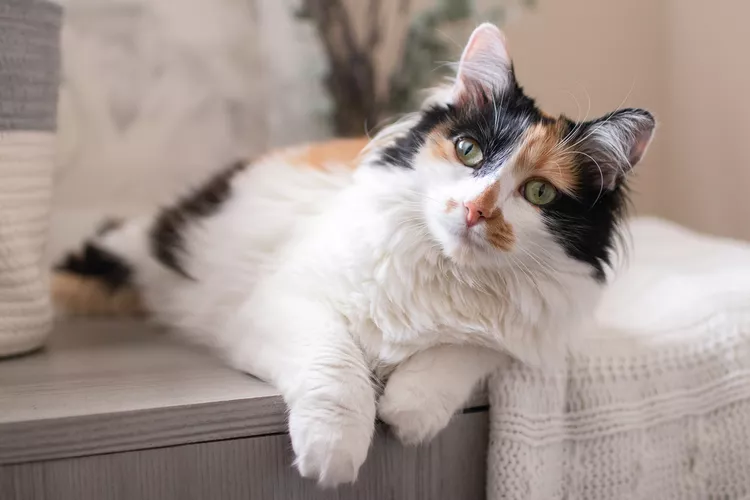

| Julian | Julian is a special guy as can be seen from his fur orange and white is his game is a bit older then Moon at 2 years. But the rumors are true orange cats are crazy but also crazy for cuddles so i would say its a win win. |  |
Henry | Henry is a calm fellow that likes to observe the surroundings around him dont expect many cuddles but he sure will talk to you which is great!!. he is one of our older memebers at 10 years old |  | Obiwan | The Force is always with him as he fights against the Republic. Other than the name which sounds heroic our little grey man uses the force to send toys flying. This guy is in the first stages of life at 6 months old and an enegentic type perfect for those who want a dog in a cats body |  |
|---|---|---|---|---|---|---|---|---|
| Moon | Moon is a 1 year old cat with grey and white fur with a shy personality but when she wants pets watchout. |  |
Strawberry | Strawberry is one of our other older cats but is such a sweetheart spends most of the day lounging and is perfect for those who want a mellow buddy to hangout with. She is 9 years old right now with all black fur. | Karen | What more can be said about this sassy named and looking grey striped cat who is 1 year old but has the sass of a 40 old women whos order just came out wrong at applebees. |  |
Meet our cat of the week Freddy!!

Helped out Moon recover after surgery practically became
inseperable until Moon felt better.
Meet our bad cat of the week Obiwan!!
Obiwan gained this infamous title this week by becoming
possive over the community toys and scratching a volunteer
placing food in the community bowls.